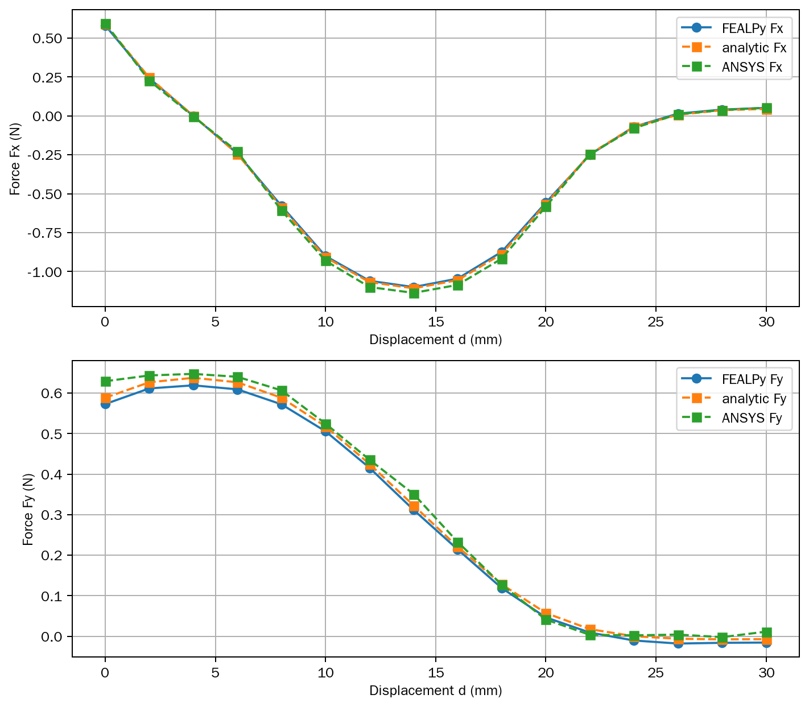
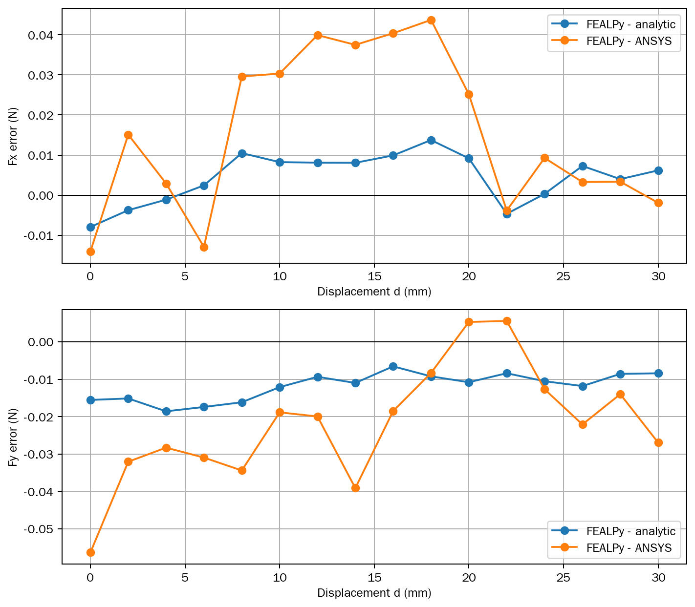

FEALPy integration study · stage 03 · library integration
阶段 ③ / ③双永磁体三维静磁算例 · FEALPy 通用化集成讲解
把分块后的通用静磁组件沉淀为 FEALPy 公共接口：材料进 fealpy.material、
网格进 fealpy.mesher、模型进 fealpy.cem.fem——数值与最初程序逐位一致，
两个待议议题均有明确落地。上一站见 工程化分块详细版。
3新增公共模块
68项 fealpy 测试
逐位三站数值一致
2项议题落地
STAGE 01独立算例基线建立可复现、可对标的数值闭环。
STAGE 02算例工程化分块拆分职责，同时保持数值结果不变。
STAGE 03FEALPy 通用化集成沉淀公共接口，并用测试守住正确性。
§1集成了什么
1.1 落点总览
| 分块组件 | fealpy 落点 | 说明 |
|---|---|---|
| materials.Air / PermanentMagnet | fealpy.material | Air / LinearMagneticMaterial / PermanentMagnet + MagneticMaterialProtocol（不可变 tuple 存储） |
| geometry + mesh | fealpy.mesher.BoxRegionMesher | 单类网格器：命名区域（tuple 简写 / 角点形式）、严格校验、嵌入盒必须在外盒内 |
| pde + solver + postprocess | fealpy.cem.fem.MagnetostaticLFEMModel | 有状态 ComputationalModel + 显式规范点 + 函数式力入口 compute_maxwell_force |
| 制造解 exp0014 | 退回 tests/cem/fem | 不注册 poisson DATA_TABLE（议题一的落地，见 §2.1） |
| 测试 | tests/{material,mesher,cem/fem} | 68 项：材料 10 + 网格器 29 + 模型 29 |
1.2 与分块包的组件映射
| 分块（magnetostatic 包） | 集成位置 |
|---|---|
geometry.BoxRegion / BoxSizeField / MeshOptions / GeometryModel | 折叠进 BoxRegionMesher 的 options 字典（构造时校验） |
mesh.MeshData / GmshTetraMesher | BoxRegionMesher + mesh cell sector 的 "region" attribute（cell_tags 属性读透该 attribute） |
pde.ScalarPotentialPDE | 并入 MagnetostaticLFEMModel（逐单元系数方法成为模型方法） |
solver.ScalarPotentialSolver / FEMSolution | MagnetostaticLFEMModel（状态存 space/stiffness/rhs/uh/solver_info） |
postprocess.MaxwellStressPostprocessor / SurfaceData | compute_force() / select_interface() / SurfaceData + 模块级函数式入口 |
不集成：双磁体 benchmark 专属内容（具体几何尺寸、Akoun–Yonnet 公式、ANSYS 表、CLI、对比/绘图）留在算例目录，作为 fealpy 公共能力的下游用户。
§2两个议题的落地
2.1 议题一：工程型定位 制造解退回测试本地
- 待确认的问题：制造解要不要注册为
fealpy.model.poisson的 exp（DATA_TABLE=14）？ - 决策：不注册。主输入是向量磁化场 M、边界条件是 B·n=0，通用
PoissonLFEMModel的标量 source 与 Dirichlet 接口消费不了；放入 DATA_TABLE 会形成「名义可发现、实际不可互换」的公共算例；FEALPy 中并非每个领域模型都必须配一个 Exp。 - 保留的验证能力：解析函数留在模型测试内——Ω=(0,1)³ 真解 φ=sin(πx)sin(πy)sin(πz)，M=∇φ+∇×ψ（ψ 紧支撑 → 边界 B·n=0 精确成立），H¹ 误差随加密单调下降；网格用确定性的
TetrahedronMesh.from_box()，不依赖 Gmsh。
2.2 议题二：归口 cem/fem fealpy/cem/fem/
- 待确认的问题：磁标势模型留在
fealpy/fem/还是迁fealpy/cem/fem/？ - 决策：迁
cem/fem/。三条依据：① 公共接口含 μ₀、μᵣ、M/H/B、永磁体与 Maxwell 应力，属于计算电磁学领域模型（复用 fealpy.fem 的通用形式与积分器）；② 依赖方向保持fealpy.cem.fem → fealpy.fem单向，通用 FEM 层不反向导入 CEM，无循环依赖；③ 与fealpy/csm/fem/的领域包组织一致，且fealpy/cem/fem/子包早已预留。
§3协议化接口与求解加固
3.1 材料协议 fealpy/material/magnetic_material.py
MagneticMaterialProtocol：两个只读属性（μᵣ、M）——任何满足协议的对象都能当材料，不只三个内置类；Air：μᵣ=1、M=(0,0,0)；LinearMagneticMaterial：任意正 μᵣ 的线性各向同性材料；PermanentMagnet：B = μ₀(μᵣH+M) 形式，磁化强度以不可变 tuple 存储（frozen 数据类不被 ndarray 原地修改）。
3.2 网格数据协议 RegionTaggedMeshDataProtocol
- 模型只要求 mesh / cell_tags / region_tags / interface_names / tag 五个成员，不再绑定 BoxRegionMesher；
- 任何共形四面体网格提供者（圆柱、STEP、外部导入）都能接入；
set_mesh_data严格校验：三维四面体、标签整数 dtype、标签值 ⊆ region_tags、名称唯一、界面引用存在——错误在求解前暴露。
标签存放与网格侧机制对齐：逐单元标签存为 mesh cell sector 的
"region" attribute（新网格机制正统），BoxRegionMesher.cell_tags 读透该 attribute——写 VTU 时自动成为 cell data；region_tags（name→int）与 interface_names 属几何语义元数据，留在 mesher 上。已知限制：网格加密/重编号后 attributes 不自动 remap（本算例每工况重建网格，不受影响）。3.3 显式规范点 solve() · gauge pinning
- 纯 Neumann 刚度矩阵有常数核；在 SciPy 副本上把第 0 个自由度整行整列清零、对角置 1、右端置 0——系统变为非奇异；
- 该操作只改变磁标势的任意常数，不改变 H、B 与力（同网格实测与奇异 CG 路径差异 ≤ 1.3e-10 N）；
- 通过 callback 记录真实 CG 迭代数，存入
solver_info（cg_info / cg_iterations / gauge_dof）。
3.4 函数式力入口 compute_maxwell_force()
- 模块级函数：网格数据 + 材料 + 空间 + 势 + 界面名 → 力 (3,)，后处理流水线不必持有模型实例；
- 校验 space 的 Lagrange 次数、space 与 mesh 的同一性、势的形状；
- 复用模型的
compute_force()，公式只有一份。
§4三版实现对比（网格 · 材料 · 求解）
同一个 d 工况的完整算例配置，三版并排：4.1 如何创建网格、4.2 如何设置材料、4.3 如何求解。 最初程序把三者绑在类方法里；分块版拆成独立模块；集成版换成 fealpy 公共接口——benchmark 只剩「配置与编排」。
4.1 几何与网格构建
① 最初程序 · build_gmsh_mesh() 的几何部分最初程序/double_magnet_benchmark.py · L159–191
② 工程化分块 · make_geometry()初步分块/modular_double_magnet_benchmark.py · L37–73
③ FEALPy 集成 · make_mesher()初步集成/modular_double_magnet_benchmark.py · L34–107
4.2 材料设置
① 最初程序 · 常量区 + 磁化写入double_magnet_benchmark.py · L31–37、L247–250
② 工程化分块 · make_pde()初步分块/modular_double_magnet_benchmark.py · L93–103
③ FEALPy 集成 · 规格换算 + make_materials()初步集成/modular_double_magnet_benchmark.py · L30–31、L110–117
BR_Z / MZ 为什么在算例层：Br = 0.38 T 是 ANSYS benchmark 的工程规格，fealpy 的
PermanentMagnet 只接受磁化强度 M（A/m）——「规格 → 本构」的换算 M = Br/μ₀ 属于算例配置，材料类本身不认识 Br 这个概念（三版一致）。4.3 求解流水线
① 最初程序 · solve(d)最初程序/double_magnet_benchmark.py · L388–408
② 工程化分块 · solve()初步分块/modular_double_magnet_benchmark.py · L106–129
③ FEALPy 集成 · solve()初步集成/modular_double_magnet_benchmark.py · L120–140
4.4 环节对照表
| 环节 | ① 最初程序 | ② 工程化分块 | ③ FEALPy 集成 |
|---|---|---|---|
| 几何与网格 | build_gmsh_mesh()（几何+尺寸场+网格一体） | make_geometry() + GmshTetraMesher | make_mesher() + BoxRegionMesher（角点形式） |
| 材料 | 常量区 + assemble 里 cell_tag >= 2 写 M_z | make_pde()（区域名 → 材料对象） | make_materials()（fealpy 材料类） |
| 求解 | assemble() + _solve_linear_system() | ScalarPotentialSolver | MagnetostaticLFEMModel |
| 算力 | find_maxwell_faces() + compute_maxwell_force() | MaxwellStressPostprocessor | model.compute_force() |
结构变了，数值没变：三版的组装、求解与应力积分逐句对应（积分器配置、PyAMG-CG、应力公式完全相同）；几何经角点形式逐位一致，因此三版在同一工况下的网格逐位相同、磁力在求解器噪声水平内一致（§5）。
§5三站数值一致性
5.1 链条对照（本机实测）
| 阶段 | 入口 | F0（p=1, d=0，N） | 网格 |
|---|---|---|---|
| ① 最初程序 | double_magnet_benchmark.py | (-0.56731597, -0.57342061, 1.66752555) | 基准 |
| ② 工程化分块 | magnetostatic 包 | (-0.56731597, -0.57342061, 1.66752555) | 逐位一致 |
| ③ FEALPy 集成 | fealpy.cem.fem | (-0.56731597, -0.57342061, 1.66752555) | 逐位一致 |
两个关键技术点：① 角点形式把最初程序的角点算式原样传给 Gmsh——center/size 往返会差 1 ulp，足以改变网格（实测力差约 2e-6 N）；② 求解器本身有 ~1e-12 N 的 OpenMP 归约噪声，回归判据定为「网格逐位一致 + 磁力 rtol=1e-9」。p=2, d=0 同样逐位一致：F0 = (-0.58042072, -0.57281791, 1.73712687)。
5.2 角点形式为什么关键
四个区域全部用角点形式（代码见 §4.1 第 ③ 栏）：center/size 往返会差 1 ulp，足以改变 Gmsh 网格（实测力差约 2e-6 N）；角点形式把最初程序的角点算式原样传给 Gmsh → 网格逐位一致。带参数名的快速失败（d≥0、h_near≤h_far）是算例语义，刻意留在 benchmark 层而非 fealpy。
5.3 回归测试全文 test_benchmark_regression.py
- 同一进程内运行最初程序与集成入口的 p=1、d=0 工况；
- 断言网格节点/单元逐位一致、F0/F1 在 rtol=1e-9 内一致；
- 磁标势只确定到常数，不做逐位比较——回归判据全部写在测试 docstring 里。
# fealpy 测试（68 项）+ 算例端测试（19 项）
PYTHONPATH=fealpy python -m pytest \
fealpy/tests/material fealpy/tests/mesher/test_box_region_mesher.py \
fealpy/tests/cem/fem -q
PYTHONPATH=fealpy python -m pytest test_comparison.py \
test_double_magnet_cli.py test_benchmark_regression.py -q5.4 对标结果图（本机当前代码生成）


§6通用性实测：三磁体 + 软磁案例
通用性不是嘴上说的——用集成组件实测一个非双磁体问题（脚本
generic_magnet_case.py）：四块磁体（三种尺寸、两种磁化方向）+ 一块
μᵣ=250 软磁材料 + 五个嵌套 Maxwell 盒，走完「几何 → 材料 → 求解 → 算力」四步流程。
6.1 案例与结果 p=1 · 19,903 节点 / 118,941 单元 · CG 24 次
| 对象 | 受力 (N) | 说明 |
|---|---|---|
| 组合体整体 F_all | (+0.004, −0.057, +0.012) | ≈ 0：孤立组合体自作用力为零 ✓ |
| magnet_a F_a | (−0.101, −0.006, −0.004) | 并排同向磁化相斥，推向 −x ✓ |
| magnet_b F_b | (+0.094, +0.011, +0.001) | 镜像对象，推向 +x，符号镜像 ✓ |
| magnet_c F_c | (−0.000, −0.004, −0.126) | 被下方组合体吸引（−z） |
| magnet_d(+y) F_d | (−0.002, −0.033, +0.136) | 不同磁化方向，受力非零 ✓ |
四项校验全部通过：① 所有力有限；② 组合体自作用力 ≈ 0（硬物理校验）；③ a/b 镜像关系成立（符号镜像，量级在离散误差内一致）；④ μᵣ=250 变系数路径端到端跑通。
6.2 过程中的两个工程发现（通用性使用要点）
| 发现 | 内容 |
|---|---|
| 嵌套 Maxwell 盒的界面命名 | 内层盒的外侧相邻区域是外层盒（不是最外层空气）——命名界面必须写 ("box_a_air", "box_all_air")；外层盒用更低 priority 先写、内层后写覆盖、磁体最后覆盖。 |
| HXT 网格不保持镜像对称 | 19,903 个节点中 17,515 个无镜像伙伴——对称性类校验只能到离散误差水平（实测力差 ~7%），要么用结构化网格，要么放宽容差。 |
通用性结论：换一套几何与材料，四步流程原样复用、物理校验成立——「通用的是管线，不是某一个几何形状」有了实测证据。完整边界清单与三维几何图见专题页 集成通用性.html（或《集成通用性边界.md》）。
§7几何示意

图 1 · 几何示意：两块沿 +z 充磁的永磁体，上磁体沿 x 平移 d；虚线 Maxwell 盒只包围下磁体，在其表面积分 Maxwell 应力得下磁体受力。
附录使用方式与文件地图
运行方式
# 单工况（自动使用本目录 vendored fealpy）
python modular_double_magnet_benchmark.py --d 0 --p 2
# Python API
from modular_double_magnet_benchmark import solve_many
results = solve_many([0.0, 2.0, 4.0], p=2)文件地图
| 文件 | 职责 |
|---|---|
fealpy/fealpy/material/magnetic_material.py | MagneticMaterialProtocol / Air / LinearMagneticMaterial / PermanentMagnet |
fealpy/fealpy/mesher/box_region_mesher.py | BoxRegionMesher（命名区域 + 角点形式 + 严格校验） |
fealpy/fealpy/cem/fem/magnetostatic_lfem_model.py | MagnetostaticLFEMModel / RegionTaggedMeshDataProtocol / SolverOptions / SurfaceData / MU0 / compute_maxwell_force |
fealpy/tests/… ×3 | 68 项测试（材料 10 + 网格器 29 + 模型 29） |
modular_double_magnet_benchmark.py | 算例配置与入口（角点形式几何 + 模型三件套 + CLI 委托） |
double_magnet_cli.py / comparison.py / double_magnet_reference.py | 命令行层 / 通用对比统计 / 解析公式与 ANSYS 表 |
test_benchmark_regression.py | 端到端回归：集成入口 vs 最初程序（网格逐位一致） |
FEALPy 通用化集成版 · 翻页演示见 集成_简洁版.html · 上一站 工程化分块详细版 · 文档《fealpy集成修改说明.md》与本页同目录